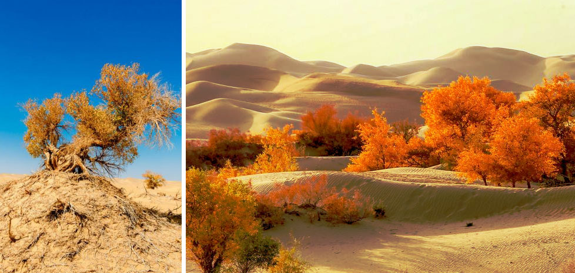

我的博客 | 攻略 | 随笔

博 主 简 介
大家好,我是你们的旅行博主—— LonelyStone。本人是一名资深旅行博主，外向型的内向人格，对世界的好奇心随年龄有增无减。 同时是音乐、电影、旅行、文学、篮球、长跑、潜水爱好者。想在老去之前，看遍这颗星球的美好。
旅行格言： 人生不过一场旅行， 你路过我,我路过你,然后各自回头，敬往事一杯烈酒。比起说走就走的旅行，很多人的生活都是日渐趋于平淡的怅然， 缺少了一种享受生活的阳光悠然。
旅行足迹：在纳米比亚的死亡谷、土耳其卡帕多奇亚、日本镰仓、马达加斯加 ......[详细]
塔克拉玛干沙漠：爱我就征服我
2019.04.21 地点：塔克拉玛干沙漠
在这浩瀚的大漠我看到了姿态各异、生命力极强的胡杨。 没有肥沃的土壤、没有充足的水分、没有适宜的环境，面对着寸草不生的塔克拉玛干大沙漠， 却有胡杨毅然傲立戈壁，呈现出生命醉人的绿。

据说，守护在戈壁的胡杨，一千年不死，一千年不倒，一千年不朽， 这种傲然挺立、不屈不挠的精神，深深震动了我，这正像生活在大漠边缘勤劳勇敢的人们。 喜欢摄影的我，想努力用自己的视角体会这种精神。
